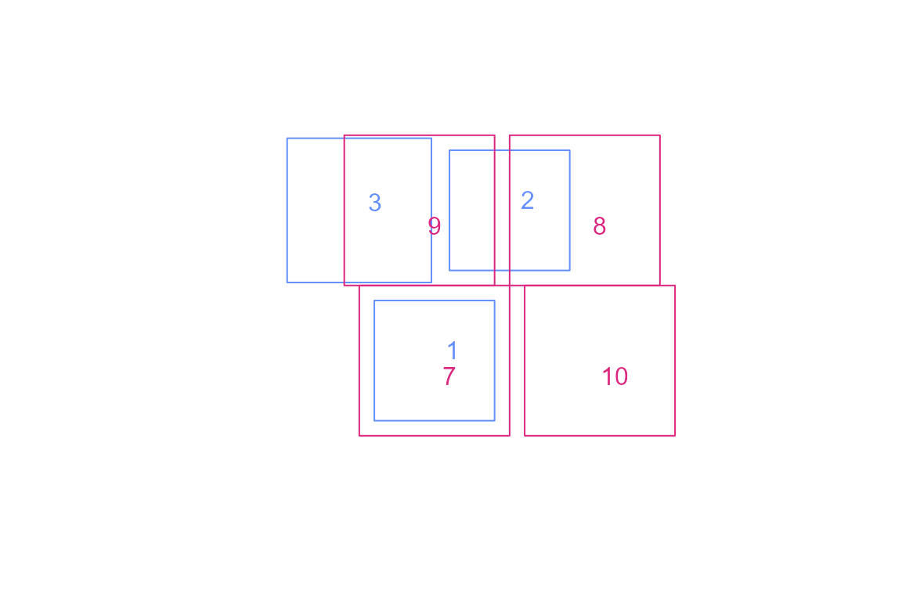
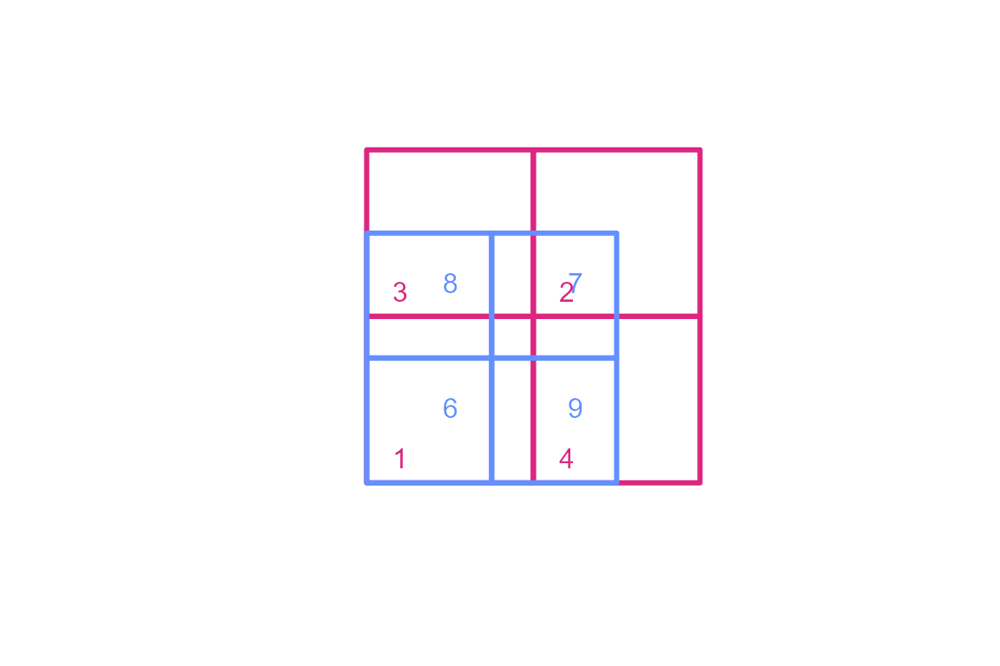
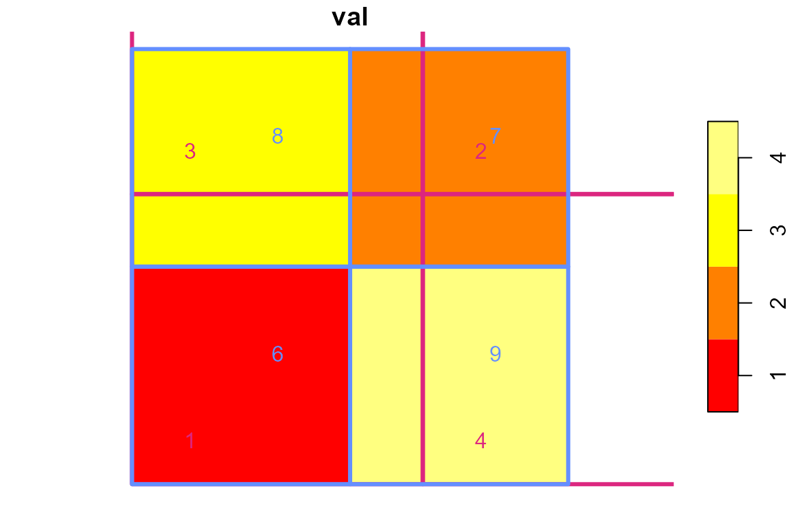

Area Weight Generation for Polygon Intersections
Source:vignettes/polygon_intersection.Rmd
polygon_intersection.RmdThis article demonstrates how to create area weights for two sets of polygons.
It
is a comparison with the gdptools python package
demonstration here.
gdptools_weights <- read.csv(system.file("extdata/gdptools_prl_out.csv", package = "ncdfgeom"),
colClasses = c("character", "character", "numeric"))
gdptools_weights <- dplyr::rename(gdptools_weights, gdptools_wght = wght)
gage_id <- "USGS-01482100"
basin <- nhdplusTools::get_nldi_basin(list(featureSource = "nwissite", featureId = gage_id))
huc08 <- nhdplusTools::get_huc(id = na.omit(unique(gdptools_weights$huc8)), type = "huc08")
huc12 <- nhdplusTools::get_huc(id = na.omit(unique(gdptools_weights$huc12)), type = "huc12")
org_par <- par(mar = c(0, 0, 0, 0))
plot(sf::st_as_sfc(sf::st_bbox(huc12)))
plot(sf::st_geometry(basin), lwd = 4, add = TRUE)
plot(sf::st_simplify(sf::st_geometry(huc08), dTolerance = 500), add = TRUE, lwd = 2)
plot(sf::st_simplify(sf::st_geometry(huc12), dTolerance = 500), add = TRUE, lwd = 0.2, border = "grey")
par(org_par)
weights <- ncdfgeom::calculate_area_intersection_weights(
x = sf::st_transform(dplyr::select(huc12, huc12), 6931),
y = sf::st_transform(dplyr::select(huc08, huc8), 6931),
normalize = TRUE
)
#> Loading required namespace: areal
weights <- dplyr::left_join(weights, gdptools_weights, by = c("huc8", "huc12"))With weights calculated, we can do a little investigation into the differences.
weights$diff <- weights$w - weights$gdptools_wght
# make sure nothing is way out of whack
max(weights$diff, na.rm = TRUE)
#> [1] 0.0000009205585
# ensure the weights generally sum as we would expect.
sum(weights$gdptools_wght, na.rm = TRUE)
#> [1] 25
sum(weights$w, na.rm = TRUE)
#> [1] 25
length(unique(na.omit(weights$huc8)))
#> [1] 25
# see how many NA values we have in each.
sum(is.na(weights$w))
#> [1] 183
sum(is.na(weights$gdptools_wght))
#> [1] 183
# look at cases where gptools has NA and ncdfgeom does not
weights[is.na(weights$gdptools_wght) & !is.na(weights$w),]
#> # A tibble: 0 × 5
#> # ℹ 5 variables: huc12 <chr>, huc8 <chr>, w <dbl>, gdptools_wght <dbl>,
#> # diff <dbl>The following example illustrates the nuances between normalized and non-normalized area weights and shows more specifically how area weight intersection calculations can be accomplished.
The set of polygons are a contrived but useful for the sake of demonstration.
library(dplyr)
#>
#> Attaching package: 'dplyr'
#> The following objects are masked from 'package:stats':
#>
#> filter, lag
#> The following objects are masked from 'package:base':
#>
#> intersect, setdiff, setequal, union
library(sf)
#> Linking to GEOS 3.12.1, GDAL 3.8.4, PROJ 9.3.1; sf_use_s2() is TRUE
library(ncdfgeom)
g <- list(rbind(c(-1,-1), c(1,-1), c(1,1), c(-1,1), c(-1,-1)))
blue1 = sf::st_polygon(g) * 0.8
blue2 = blue1 + c(1, 2)
blue3 = blue1 * 1.2 + c(-1, 2)
pink1 = sf::st_polygon(g)
pink2 = pink1 + 2
pink3 = pink1 + c(-0.2, 2)
pink4 = pink1 + c(2.2, 0)
blue = sf::st_sfc(blue1,blue2,blue3)
pink = sf::st_sfc(pink1, pink2, pink3, pink4)
plot(c(blue,pink), border = NA)
plot(blue, border = "#648fff", add = TRUE)
plot(pink, border = "#dc267f", add = TRUE)
blue <- sf::st_sf(blue, data.frame(idblue = c(1, 2, 3)))
pink <- sf::st_sf(pink, data.frame(idpink = c(7, 8, 9, 10)))
text(sapply(sf::st_geometry(blue), \(x) mean(x[[1]][,1]) + 0.4),
sapply(sf::st_geometry(blue), \(x) mean(x[[1]][,2]) + 0.3),
blue$idblue, col = "#648fff")
text(sapply(sf::st_geometry(pink), \(x) mean(x[[1]][,1]) + 0.4),
sapply(sf::st_geometry(pink), \(x) mean(x[[1]][,2])),
pink$idpink, col = "#dc267f")
sf::st_agr(blue) <- sf::st_agr(pink) <- "constant"
sf::st_crs(pink) <- sf::st_crs(blue) <- sf::st_crs(5070)
(blue_pink_norm_false <-
calculate_area_intersection_weights(blue, pink, normalize = FALSE))
#> # A tibble: 4 × 3
#> idblue idpink w
#> <dbl> <dbl> <dbl>
#> 1 1 7 1
#> 2 2 8 0.5
#> 3 2 9 0.375
#> 4 3 9 0.604NOTE: normalize = FALSE so weights sum to 1 per source polygon only when a source polygon is fully covered by the target. The non-intersecting portion is not included.
The following breaks down how to use these weights for one source polygon.
blue$val = c(30, 10, 20)
blue$area <- as.numeric(sf::st_area(blue))
(result <- st_drop_geometry(blue) |>
left_join(blue_pink_norm_false, by = "idblue"))
#> idblue val area idpink w
#> 1 1 30 2.5600 7 1.0000000
#> 2 2 10 2.5600 8 0.5000000
#> 3 2 10 2.5600 9 0.3750000
#> 4 3 20 3.6864 9 0.6041667To calculate the value for pink-9, we would do:
((10 * 0.375 * 2.56) + (20 * 0.604167 * 3.6864)) / ((0.375 * 2.56) + (0.604167 * 3.6864))
#> [1] 16.98795This is saying that 0.375 of blue-3 covers pink-9 and 0.6 of blue-2 covers pink-9. Since we are using area as the weighting method, we multiply the fraction of each source polygon by its area and the value we want to create an area weight for. We sum the contributions from blue-2 and blue-3 to pink-9 and divide by the sum of the combined area weights.
Note that because there is no contribution to 9 over some parts of the polygon, that missing area does not appear. The intersecting areas are 0.96 and 2.23 meaning that we are missing
4 - 0.96 - 2.23 = 0.81
and could rewrite the value for pink-9 as:
((10 * 0.375 * 2.56) + (20 * 0.604167 * 3.6864)) + (NA * 1 * 0.81) /
((1 * 0.81) + (0.375 * 2.56) + (0.604167 * 3.6864))
#> [1] NAWhich evaluates to NA. This is why for this operation we usually drop NA terms!
In practice, the above can be accomplished with:
(result <- result |>
group_by(idpink) |> # group so we get one row per target
# now we calculate the value for each `pink` with fraction of the area of each
# polygon in `blue` per polygon in `pink` with an equation like this:
summarize(
new_val = sum( (val * w * area) ) / sum(w * area)))
#> # A tibble: 3 × 2
#> idpink new_val
#> <dbl> <dbl>
#> 1 7 30
#> 2 8 10
#> 3 9 17.0Now let’s do the same thing but with
normalize = TRUE.
(blue_pink_norm_true <-
calculate_area_intersection_weights(select(blue, idblue), pink, normalize = TRUE))
#> # A tibble: 4 × 3
#> idblue idpink w
#> <dbl> <dbl> <dbl>
#> 1 1 7 0.64
#> 2 2 8 0.32
#> 3 2 9 0.24
#> 4 3 9 0.557NOTE: normalize = TRUE so weights sum to 1 per target polygon. Non-overlap is ignored as if it does not exist.
The following breaks down how to use these weights for one source polygon.
(result <- st_drop_geometry(blue) |>
left_join(blue_pink_norm_true, by = "idblue"))
#> idblue val area idpink w
#> 1 1 30 2.5600 7 0.6400
#> 2 2 10 2.5600 8 0.3200
#> 3 2 10 2.5600 9 0.2400
#> 4 3 20 3.6864 9 0.5568To calculate the value for pink-9, we would do:
((10 * 0.24) + (20 * 0.5568)) / (0.24 + (0.5568))
#> [1] 16.98795This is saying that the portion of pink-9 that should get the value from blue-2 is 0.3 and the portion of pink-9 that should get the value from blue-3 is 0.7. In this form, our weights are transformed to includethe relative area of the source polygons.
As shown above as well, the calculation can be accomplished with:
(result <- result |>
group_by(idpink) |> # group so we get one row per target
# now we calculate the value for each `pink` with fraction of the area of each
# polygon in `blue` per polygon in `pink` with an equation like this:
summarize(
new_val = sum( (val * w) ) / sum(w)))
#> # A tibble: 3 × 2
#> idpink new_val
#> <dbl> <dbl>
#> 1 7 30
#> 2 8 10
#> 3 9 17.0We can look at a more typical arrangement of polygons and look at this a different way.
 Let’s also look at the values. 
# say we have data from `blue` that we want sampled to `pink`.
# this gives the percent of each `blue` that intersects each `pink`
(blue_pink <- calculate_area_intersection_weights(
select(blue, idblue), select(pink, idpink), normalize = FALSE))
#> # A tibble: 9 × 3
#> idblue idpink w
#> <dbl> <dbl> <dbl>
#> 1 6 1 1
#> 2 7 1 0.111
#> 3 8 1 0.333
#> 4 9 1 0.333
#> 5 7 2 0.444
#> 6 7 3 0.222
#> 7 8 3 0.667
#> 8 7 4 0.222
#> 9 9 4 0.667
# NOTE: `w` sums to 1 per `blue` in all cases
summarize(group_by(blue_pink, idblue), w = sum(w))
#> # A tibble: 4 × 2
#> idblue w
#> <dbl> <dbl>
#> 1 6 1
#> 2 7 1
#> 3 8 1
#> 4 9 1
# Since normalize is false, we apply weights like:
st_drop_geometry(blue) |>
left_join(blue_pink, by = "idblue") |>
mutate(blue_areasqkm = 1.5 ^ 2) |> # add area of each polygon in `blue`
group_by(idpink) |> # group so we get one row per `pink`
# now we calculate the value for each b with fraction of the area of each
# polygon in `blue` per polygon in `pink` with an equation like this:
summarize(
new_val = sum( (val * w * blue_areasqkm) ) / sum(w * blue_areasqkm))
#> # A tibble: 4 × 2
#> idpink new_val
#> <dbl> <dbl>
#> 1 1 2
#> 2 2 2
#> 3 3 2.75
#> 4 4 3.5
# NOTE: `w` is the fraction of the polygon in `blue`. We need to multiply `w` by the
# unique area of the polygon it is associated with to get the weighted mean weight.
# we can go in reverse if we had data from `pink` that we want sampled to `blue`
(pink_blue <- calculate_area_intersection_weights(
select(pink, idpink), select(blue, idblue), normalize = FALSE))
#> # A tibble: 9 × 3
#> idpink idblue w
#> <dbl> <dbl> <dbl>
#> 1 1 6 0.562
#> 2 1 7 0.0625
#> 3 2 7 0.25
#> 4 3 7 0.125
#> 5 4 7 0.125
#> 6 1 8 0.188
#> 7 3 8 0.375
#> 8 1 9 0.188
#> 9 4 9 0.375
# NOTE: `w` sums to 1 per `pink` (source) only where `pink` is fully covered by `blue` (target).
summarize(group_by(pink_blue, idpink), w = sum(w))
#> # A tibble: 4 × 2
#> idpink w
#> <dbl> <dbl>
#> 1 1 1
#> 2 2 0.25
#> 3 3 0.5
#> 4 4 0.5
# Now let's look at what happens if we set normalize = TRUE. Here we
# get `blue` as source and `pink` as target but normalize the weights so
# the area of `blue` is built into `w`.
(blue_pink <- calculate_area_intersection_weights(
select(blue, idblue), select(pink, idpink), normalize = TRUE))
#> # A tibble: 9 × 3
#> idblue idpink w
#> <dbl> <dbl> <dbl>
#> 1 6 1 0.562
#> 2 7 1 0.0625
#> 3 8 1 0.188
#> 4 9 1 0.188
#> 5 7 2 0.25
#> 6 7 3 0.125
#> 7 8 3 0.375
#> 8 7 4 0.125
#> 9 9 4 0.375
# NOTE: if we summarize by `pink` (target) `w` sums to 1 only where there is full overlap.
summarize(group_by(blue_pink, idpink), w = sum(w))
#> # A tibble: 4 × 2
#> idpink w
#> <dbl> <dbl>
#> 1 1 1
#> 2 2 0.25
#> 3 3 0.5
#> 4 4 0.5
# Since normalize is false, we apply weights like:
st_drop_geometry(blue) |>
left_join(blue_pink, by = "idblue") |>
group_by(idpink) |> # group so we get one row per `pink`
# now we weight by the percent of each polygon in `pink` per polygon in `blue`
summarize(new_val = sum( (val * w) ) / sum( w ))
#> # A tibble: 4 × 2
#> idpink new_val
#> <dbl> <dbl>
#> 1 1 2
#> 2 2 2
#> 3 3 2.75
#> 4 4 3.5
# NOTE: `w` is the fraction of the polygon from `blue` overlapping the polygon from `pink`.
# The area of `blue` is built into the weight so we just sum the weith times value oer polygon.